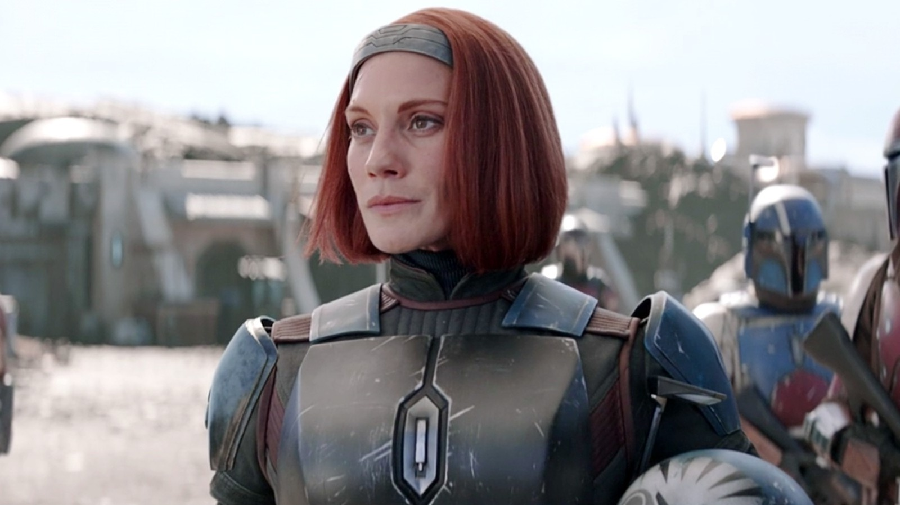

博-卡坦率曼达洛人夺回故乡，点燃大熔炉；吉迪恩与他的克隆体同归于尽；古古正式成为曼达洛学徒，丁·贾林收他为养子；两人在纳瓦罗附近的小屋安家，IG-11 成为纳瓦罗警长。
一个摘下头盔就会被逐出部族的赏金猎人，捡到一个全银河都在悬赏的孩子——整部剧的关系网就从这一对「父子」长出来：丁·贾伦与格罗古居中，一边是信条与暗剑之争撕裂又重聚的曼达洛人，一边是帝国残余的围猎；绝地只出现两次，却两次改写了这对父子的命运。
⚠ 全页含第一至第三季剧透，包括第三季大结局。下方图谱可点选人物查看详情，文字版在图谱之后。
丁·贾伦与格罗古居中：上方是曼达洛各部族，左翼是内瓦罗的盟友圈，右翼是绝地与帝国残余。点任意人物，下方会显示他的身份与关键关系；用筛选按钮可以单独高亮某个阵营。
同一张图谱的文字形态：先按阵营看谱系，再逐条看核心关系，最后是第三季大结局时每个人的落点。

内部两条裂缝：守望之子坚持「永不摘盔」的古老信条，博-卡坦一派则视摘盔为常事；暗剑按传统必须赢得决斗才能号令全族。第三季靠「共同光复曼达洛」把两派重新焊在一起。
这个圈子没有血缘和信条，全靠「欠人情—还人情」运转：丁几乎每到一处就欠下一笔，也几乎每一笔都在季终被加倍偿还。
阿索卡说破了全剧最重要的一句判断：格罗古对丁的依恋太深，强行训练反而危险。后来卢克给出二选一——光剑还是铠甲衬衣——格罗古选了后者，原力线就此让位于父子线。
帝国残余要格罗古不是为了悬赏，而是为了他的血液与原力天赋：珀欣的克隆实验、吉迪恩给自己准备的「原力克隆体」，都是这条暗线的产物。
从悬赏目标到儿子：丁三次把他送走、三次接回。第三季正式收养，冠以「丁·格罗古」之名——这是全剧唯一一条从不反转的关系。
军械师给他铠甲、给他族徽（泥角兽），也在他摘盔后判他「不再是曼达洛人」，又亲手为他指明赎罪之路：去曼达洛的活水之下沐浴。
丁在决斗中赢得暗剑却只想送出，博-卡坦按传统不能收。第三季两人并肩光复曼达洛，丁当众宣誓效忠——暗剑之争以「让贤」收场。
博-卡坦在活水下见过神兽秘龙，军械师破例接纳她「行于双道」：既戴头盔守信条，也摘盔领导全族。曼达洛的分裂到此为止。
帕兹为夺回祖传暗剑向丁发起决斗，败后仍心有不甘；但在光复曼达洛之战中他殿后力战而死，是守望之子最沉重的一笔牺牲。
吉迪恩参与过大清洗、持有暗剑、围猎格罗古做实验。两人在内瓦罗、轻巡洋舰、曼达洛地底三度对决，第三季以吉迪恩葬身火海终结。
吉迪恩要的从来不是孩子本身，而是他血液中的原力潜能——抽血、克隆、给自己造一具原力之躯。格罗古是帝国暗线的实验核心。
珀欣主导克隆研究，凯恩是吉迪恩安插进新共和国「特赦计划」的内线；她设局让珀欣被记忆抹除，替吉迪恩灭口又保住暗线。
故事的起点：客户经工会发布悬赏，格里夫把任务交给丁。第一季季终客户死于吉迪恩之手，格里夫则从掮客变成了丁的后盾。
从讨价还价的雇佣关系，到格里夫在内瓦罗给丁留地、留房子。第三季季终那间湖畔小屋，是这条关系线最安静的落点。
在索根星并肩保村、在内瓦罗并肩守城的战友。她后来穿上新共和国的制服，是丁在「官方世界」里少有的熟人。
奎伊尔花数月把刺客机器人改造成保姆机器人，「我发言了」成为第一季最动人的注脚。IG-11 最后自爆护主，完成了这次重编程的全部意义。
奎伊尔不要报酬地帮他找蛋、修船、照顾孩子，最后为护送格罗古死在侦察兵枪下。丁对机器人的信任、对「弱者」的态度，都从他这里来。
卢克在提索星单枪匹马救下众人，收格罗古为重建绝地武士团的第一个学徒；但格罗古在「光剑或铠甲」之间选了丁，这段师徒只持续了短短一程。
阿索卡通过原力与格罗古沟通，说出他的名字与来历：绝地圣殿长大、66 号密令的幸存者。她拒绝收徒，却把丁引向了提索星与卢克。
阿索卡为追查索龙的下落攻打卡洛丹，与手持贝斯卡长矛的摩根决斗。这条线通向《阿索卡》剧集，也是帝国残余与索龙回归的前奏。
波巴在塔图因的沙漠里救活重伤的芬尼克，此后两人形影不离：她是他最锋利的枪，也是他在《波巴·费特之书》里唯一完全信任的人。
波巴索回父亲留下的铠甲时两人险些动手，转头就并肩迎战帝国；丁欠波巴一次，波巴在莫拉克与内瓦罗两次来还——赏金猎人的账，算得比谁都清。
两派联军攻入吉迪恩在曼达洛地底的基地，博-卡坦手持暗剑与丁、格罗古合力对敌；暗剑在战斗中被吉迪恩捏碎——号令全族的信物没了，全族反而第一次真正站到了一起。
回到地表，博-卡坦在军械师的主持下重新点燃大锻炉，各部族共同宣誓。她以「行于双道」的新规矩成为曼达洛的领袖，帕兹之子罗格纳等人受洗入族。
撤退途中帕兹独自殿后，击溃整队帝国突击队后被三名禁卫军围杀。他的死换来了全族的生路，也是光复之战最惨烈的一笔。
吉迪恩的原力克隆体在基地爆炸中尽毁，本人被坠毁的巡洋舰火焰吞没。围猎格罗古长达三季的帝国暗线，随曼达洛的解放一同终结。
丁正式收养格罗古，取名「丁·格罗古」，并与新共和国签约成为外环的独立承包人，专猎帝国残余。父子俩在内瓦罗的湖畔小屋安家，IG-11 被修复成为小镇的执法官。
埃利亚·凯恩仍潜伏在新共和国内部，摩根·埃尔斯贝斯效忠的索龙即将归来——这些线头留给了《阿索卡》与后续电影，曼达洛人的故事则在一个「家」里暂时停稳。
搜索姓名、演员或关键词，或按阵营筛选。点任意卡片，图谱下方的人物详情会同步切换。